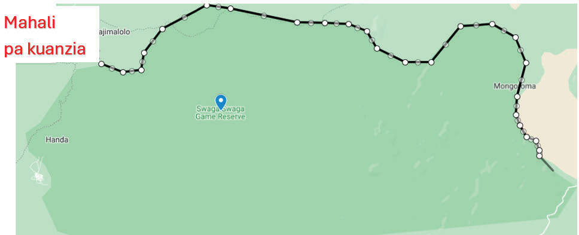

(1)
(2)
5. Anza kuchora ramani kwa kufuatilia mipaka ya hifadhi ya Swaga Swaga kama inavyowasilishwa katika Kielelezo namba 11.

Mahali pa kuanzia
6. Endelea kuchora hadi utakapokamilisha mzunguko wa eneo la hifadhi ya Swaga Swaga.Ukimaliza mzunguko, kishale cha kipanya kitabidilika kutoka alama ya kujumlisha kwenda alama ya kidole.Bofya kitufe cha kushoto cha kipanya au bofya mara mbili kitufe cha kulia cha kipanya cha kompyuta kukamilisha uchoraji.Mwisho, andika neno Swaga Swaga kwenye neno “polygon 1” na bofya neno “save” kama inavyowasilishwa kwenye Kielelezo namba 12.